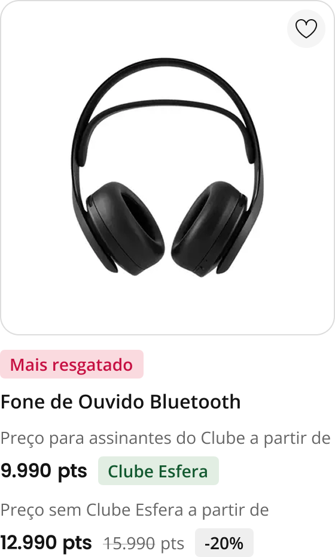
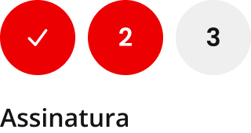
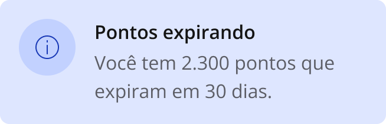
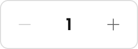
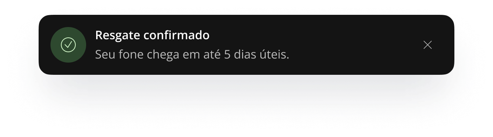

As Esfera scaled, design decisions became increasingly local.
Different approaches to colors, typography, spacing, and components created rework, inconsistency, and a growing gap between design and implementation.
Build a Design System designed for consistency over flexibility, and completeness over composability.
Through semantic foundations, opinionated components, and centralized governance, Rewards, Esfera's Design System created a shared language across design and engineering.
Led Design System strategy, foundations architecture, semantic token definition, component craft and governance, and cross-functional adoption.
Rewards Design System: Built to reduce decisions. Not to offer more options.
The problem was too many local decisions.
Governance was a product decision. We centralized it on purpose.
Rewards is not a kit designers assemble on their own. It makes UI decisions on their behalf: which heading a page uses, how spacing adapts at each breakpoint, which button size belongs to which context. Product teams cannot create local components. That moved the responsibility for every interface decision to the system team, and we accepted everything that comes with it.
-
01
Every UI decision is ours.
If a decision is wrong, it is wrong everywhere.
In returnWhen we fix it once, it is fixed everywhere.
-
02
We build every component.
Teams cannot create local components, so nothing ships without the system.
In returnOne source of truth. No forks, no lookalikes drifting apart.
-
03
Coverage came before adoption.
The library had to be complete before the first squad could rely on it.
In returnNo team ever had to improvise while waiting for the system.
-
04
We documented intent, not just specs.
Every foundation and every component states its purpose: when to use it, and when not to.
In returnNo guesswork downstream. Designers choose by context, not by taste.
-
05
Less room for expression.
Teams cannot invent a new hierarchy screen by screen.
In returnExpression moved to where it matters: flows, content and problem solving.
We chose consistency over flexibility, and completeness over composability.








Tokens became decisions. Designers applied intent, not numbers.
The first contact created friction. The second one created speed.
No more guessing. Every semantic token for spacing, typography and border radius carries its own responsive behavior: a designer picks one token, and it resolves to the right value at every breakpoint, in Figma and in code. Nobody maps sizes screen by screen, nobody writes breakpoint overrides, and handoff stops being a translation exercise. What is designed for desktop ships correct on mobile by default, and every new screen inherits the same rhythm without a single extra decision.
Less visual debate. Less rework. More predictable delivery.

We measured efficiency by comparing the time designers needed to complete equivalent UI tasks before and after adopting the Design System. We evaluated component creation, layout assembly, and reuse of standardized patterns.
Rewards was designed to make the right decisions easier And the wrong ones harder.
That's it for RewarDS. New cases are on the way.